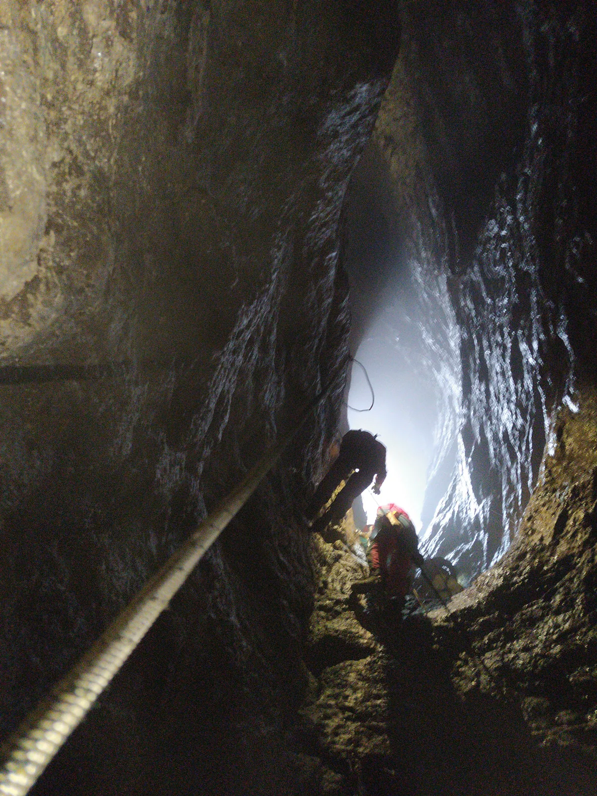

Izlet škole u Rokinu bezdanu
Kaže lokalna pjesma: "Jezerane tri jame bezdane, a Stajnica jama bezdanica". Jedna od te tri bila je domaćin polaznicima 52. speleološke škole. Njeno ime je Rokina bezdana i osim što je poznata po Čovječjoj ribici,…

Napisao: Borna Boban
Fotografije: Pava, Dejan, Karmen
Za četvrti izlet speleo škole zaputili smo se u Jezerane do jame Rokina bezdana. Kao što smo navikli očekivali smo kišu, ali smo se odmah hrabro bacili na pripremanje kampa i brzo započeli prva spuštanja u 100 metara duboku jamu.
Prvih nekoliko ulazaka i izlazaka iz jame prošlo je uglavnom suho, ali uskoro nas je nebo počastilo dosta zanimljivim uvjetima. U rasponu od par sati doživjeli smo kišu, tuču, snijeg i opet tuču tako da su se iskustva spusta u Rokinu bezdanu jako razlikovala.
Kao netko tko se prvi put upušta u ovakav spust iskustvo je teško prenijeti, ali reći ću da sam od samog prvog pogleda preko ruba do izlaska iz jame doživio puno različitih emocija, odradio dobar trening i testirao naučene vještine i mentalnu snagu u jedinstvenim uvjetima.
Vertikala u Rokinoj bezdani, na ulazu u Bunar, -60m
Bez obzira na uvjete, svi su se uspješno spustiti i popeli iz jame, ali s obzirom da se vremenska situacija nije mijenjala postalo je očito da nas čeka teška noć jer su ovaj put vjetar i padaline nadjačali naše vještine postavljanja bivaka. Pripisat ćemo to žurbi, nestrpljivosti i iščekivanju spusta u jamu, ali u spas je došlo Lovačko društvo Kapela iz Jezerana koje nam je opet ustupilo svoje prostore, kao i kafić Volan gdje nam je prostrana terasa i nadstrešnica dobro došla za prespavati. Iako uz početno negodovanje zbog napuštanja kampa, kada smo došli na suho, hrana i toplina su nam digli raspoloženje.
Brzo smo se zagrijali, podmazali grlo pelinom i nije dugo trebalo da se izvade instrumenti i počne pjevati pa su se mogli čuti neki originalni velebitaški hitovi. Negdje oko 3 postalo je jasno da smo tešku noć zamijenili teškim jutrom.
Sljedeći dan smo uz puno vode započeli dobrim doručkom i nakon čišćenja doma vratili se u kamp uz jamu gdje smo dobili demonstracije samospašavanja, navigacije putem GPS-a i mobilne aplikacije Orux, korištenja Tirolske prečnice i sistema Sv. Bernard. Izlet smo završili uz zajedničko druženje i dobro vrijeme.
SO PDS Velebit, kao i voditeljica 52. zagrebačke speleološke škole ovim putem se još jednom zahvaljuju Lovačkom društvu Kapela iz Jezerana što su nam, kao i puno puta prije, dali veliku podršku i pomoć u održavanju naše škole. Uz njih i caffe baru Volan čija je nadstrešnica sasvim lijepo poslužila kao zaklon od kiše i snijega onima koji su ostali do nešto kasnije. :)